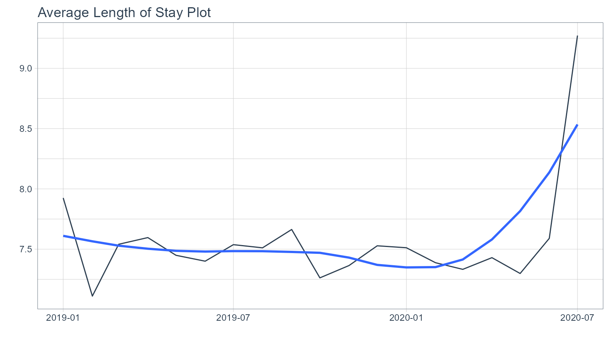

vignettes/getting-started.Rmd
getting-started.RmdhealthyR: A toolkit for hospital data
First we are going to take a look at some time series plotting functions. These are fairly straight forward and therefore should seem intuitive. We are going to generate some random numbers to simulate different daily average length of stay data. We will set a seed for reproducibility.
set.seed(123)
# Library Load ----
suppressPackageStartupMessages(library(healthyR))
suppressPackageStartupMessages(library(timetk))
suppressPackageStartupMessages(library(dplyr))
suppressPackageStartupMessages(library(purrr))
# Make A Series of Dates ----
ts_tbl <- tk_make_timeseries(
start = "2019-01-01"
, by = "day"
, length_out = "1 year 6 months"
)
# Set Values ----
values <- runif(548, 5, 10)
# Make tibble ----
df_tbl <- tibble(x = ts_tbl, y = values) %>% set_names("Date","Values")Now that we have our data lets see how easy it is to generate an ALOS chart:
ts_alos_plt(
.data = df_tbl
, .date_col = Date
, .value_col = Values
, .by = "month"
, .interactive = FALSE
)
And with the .interactive option set to TRUE:
ts_alos_plt(
.data = df_tbl
, .date_col = Date
, .value_col = Values
, .by = "month"
, .interactive = TRUE
)As we can see, this function has the ability to return either a static plot or and interactive plot. Under the hood it is using the timetk::plot_time_series function. You can find out more on the the timetk function here.
That is the end of this first and very quick tutorial on the ts_alos_plt function.